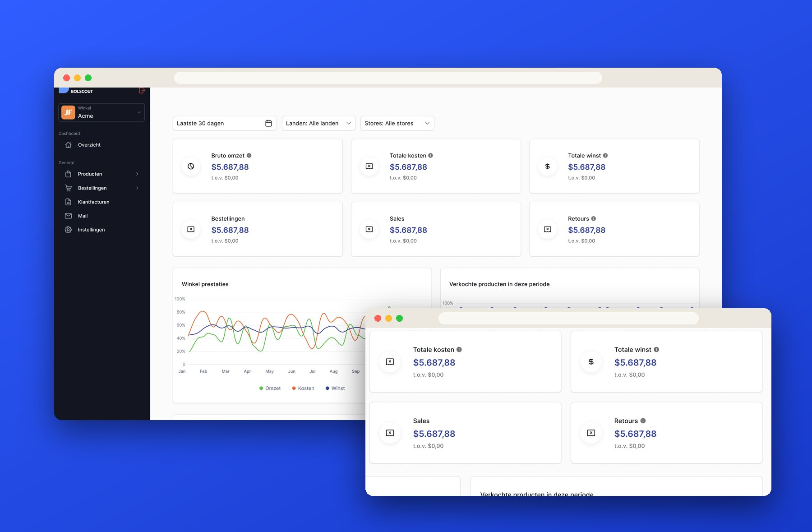
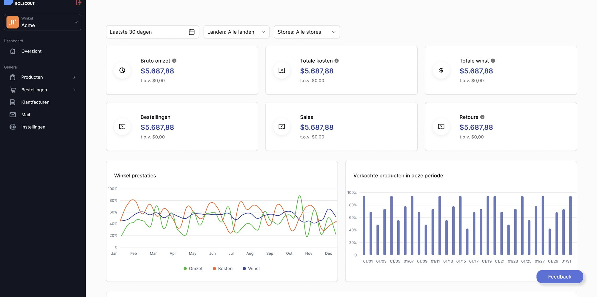
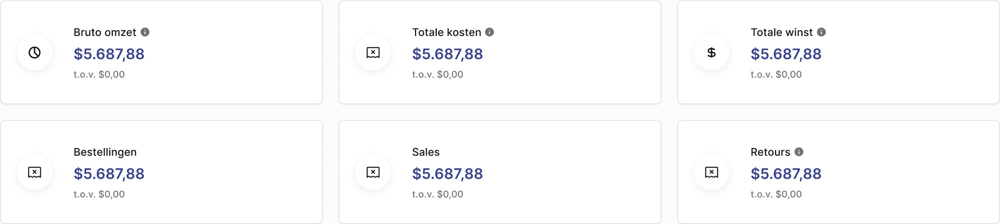
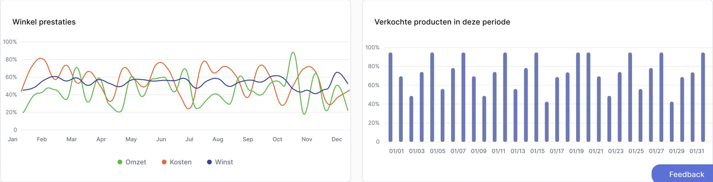

← All projects
Product Design · UI / Data Viz
Bolscout
Bolscout is a dashboard for sellers on Bol.com. Instead of digging through spreadsheets, a seller gets revenue, costs, profit and per-product performance on one screen. We designed it as a duo.

the dashboard
Everything a seller checks, on one screen.
The overview screen follows the brief: filters at the top, six key numbers beneath them, then charts and a per-product breakdown.
- Filters for the period, the country and the store sit at the top.
- Six large numbers: revenue, costs, profit, orders, sales and returns.
- A line chart tracks revenue, costs and profit; a bar chart shows products sold per day.
- Performance per product continues below the charts.

up close
Numbers first, charts second.
Each key number gets large type and its own icon so it reads at a glance, and the line chart gives revenue, costs and profit one colour each.


looking back
What I'd do differently.
I'd research more ways to simplify complex financial information without losing depth.